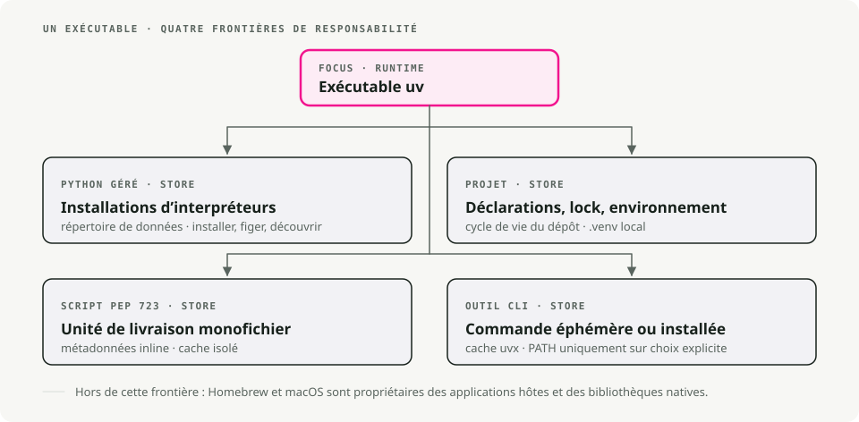
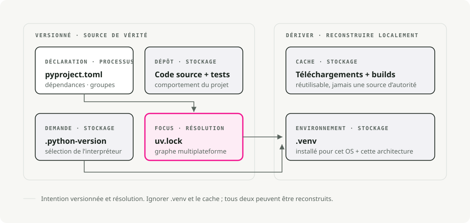
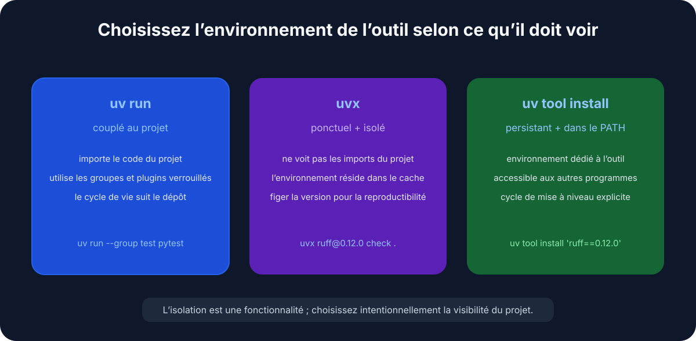
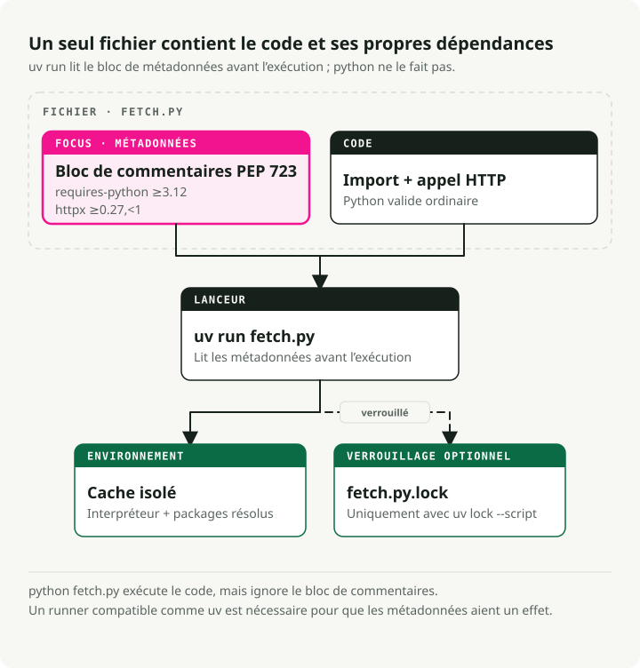

Traduction automatique
Cet article a été traduit automatiquement depuis la version originale en anglais.
uv sur macOS : Gestion des versions de Python, des projets et des outils
Début rapide
# Install uv
brew install uv
# For new projects (modern workflow)
uv init # create project structure
uv add pandas numpy # add dependencies
uv run train.py # run your script
# For existing projects (legacy workflow)
uv venv # create virtual environment
uv pip install -r requirements.txt # install dependencies
uv run train.py # run your script
# Run tools without installing them
uvx ruff check . # run linter
uvx black . # run formatter
# Run a single-file script with its own dependencies (no project needed)
uv run fetch.py # uv reads the inline deps and runs it
En résumé : Utilisez uv en tant que gestionnaire de projets et d’outils Python par défaut sous macOS. Conservez Homebrew pour les paquets système, installez les versions de Python via uv python, fixer les dépendances de pinage dans pyproject.toml, et utilisez uvx pour des outils CLI utilisés une seule fois.
Pourquoi utiliser uv pour Python sous macOS ?
Si vous utilisez Python depuis un certain temps, vous manipulez probablement déjà pip, virtualenv, pip-tools, pyenv, et poetry Cela dépend du projet. uv Il fait tout ce que ces outils font, mais avec un seul fichier binaire. Il est écrit en Rust, et sur ma machine, il installe les paquets environ 10 à 100 fois plus rapidement que l’ancienne stack. Le plus grand avantage pour moi, c’est que je n’ai plus besoin de changer d’outil au milieu d’une tâche.

Il remplace pip et pip-tools pour la gestion de paquets, pyenv pour installer des versions de Python, virtualenv/venv pour les environnements, pipx pour l’exécution des outils, et poetry ou pdm pour les workflows de projet.
Installation de uv
Le moyen le plus simple pour installer uv Sur macOS, c’est via Homebrew :
brew install uv
uv Il détecte automatiquement l’architecture de votre Mac (Apple Silicon ou Intel), ce qui élimine tout besoin de configuration supplémentaire.
Pour le maintenir à jour :
brew upgrade uv
# OR
uv self update
Concepts fondamentaux
uv couvre trois cas d’usage :
- Projets — création d’une application ou d’une bibliothèque avec des dépendances.
- Scripts — exécution d’un script Python à un seul fichier contenant des dépendances intégrées.
- Outils — exécution d’outils en ligne de commande (comme
ruffouhttpie) au niveau global.
1. Gestion de projet
Pour les nouveaux projets, uv utilise la norme standard pyproject.toml pour la configuration et une compatibilité multiplateforme uv.lock pour des builds reproductibles.

Démarrer un nouveau projet :
uv init my-project
cd my-project
Cela crée un pyproject.toml, un .gitignore, et un hello.pyAjouter les dépendances :
# Runtime dependencies
uv add pandas requests
# Development dependencies
uv add pytest ruff --dev
Exécutez votre code :
uv run hello.py
uv gère l’environnement virtuel dans .venv Pour vous. Vous n’avez pas besoin de l’activer manuellement.
2. Gestion des versions Python
uv installe et gère les versions de Python pour vous, les conservant dans ~/.cache/uv. Si vous utilisez déjà pyenv Pour ce cas, vous pouvez l’omettre.
Installer une version spécifique :
uv python install 3.12
Fixer une version pour votre projet :
uv python pin 3.11
Ce code écrit un .python-version fichier. Au suivant uv run, il utilise la version fixée et la télécharge si nécessaire. Votre équipe et les processus CI disposent ainsi de la même version de Python, sans aucune coordination supplémentaire.
3. Exécution des outils avec uvx et uv tool install
uvx (an alias pour uv tool run) exécute les outils en ligne de commande Python sans les ajouter à votre environnement global ni aux dépendances de votre projet.
# Run a linter
uvx ruff check .
# Run a formatter
uvx black .
# Start a temporary Jupyter server
uvx --from jupyterlab jupyter lab
Chaque outil s’exécute dans son propre environnement temporaire, ce qui évite tout conflit de version avec les éléments déjà installés dans votre projet.

Deux détails auxquels je me réfère constamment :
- Fixer la version en ligne de texte avec
@:uvx ruff@0.6.0 check ., ou forcer l’utilisation de la version la plus récente avecuvx ruff@latest. - Le nom de la commande ne correspond pas au package ? Utilisez
--from. Le paquetjupyterlabenvoie lesjupytercommande, donc c’estuvx --from jupyterlab jupyter lab. Il en va de même pour--from httpie http. - Besoin d’une dépendance supplémentaire pour un plugin ? Ajoutez-la avec
--with:uvx --with mkdocs-material mkdocs serveSi vous utilisez un outil tous les jours, installez-le une seule fois plutôt que de créer un environnement vierge à chaque utilisation :
uv tool install ruff # now `ruff` is on your PATH
uv tool list # see what's installed
uv tool upgrade --all # update everything
uv tool uninstall ruff
La règle empirique : uvx pour des exécutions ponctuelles ou dans le cadre de CI, uv tool install Pour vos outils de travail quotidiens.
Projets hérités (requirements.txt)
requirements.txt Il a fonctionné correctement pendant un certain temps. Il s’agit d’une liste simple de paquets sans fichier de verrouillage, sans séparation entre les dépendances applicatives et celles de développement, et sans aucune indication sur les raisons pour lesquelles certains éléments ont été fixés. Tout va bien tant que vous n’essayez pas de reproduire une compilation datant de huit mois auparavant et que vous ne découvrez pas alors que le terme « fixé » désignait simplement ce que PyPI résolvait à ce moment-là.
Si vous êtes le propriétaire du projet, migrez-le. uv lit directement votre liste existante dans un pyproject.toml:
uv init --bare # minimal pyproject.toml, no scaffolding
uv add -r requirements.txt # import runtime dependencies
uv add --dev -r requirements-dev.txt # and dev ones, if you split them
Vous disposez désormais d’un pyproject.toml et un réel uv.lock cela fixe les versions résolues exactes. Veuillez confirmer que tout a bien été transféré. uv pip freeze, supprimer l’ancien requirements.txtEt ne regardez pas en arrière.
Mais peut-être exécutez-vous toujours la même requirements.txt Depuis Python 3.6, et vous n’êtes pas intéressé par mon avis à ce sujet. Compréhensible. uv fonctionne toujours comme un remplacement direct pour pip et venv, aucune migration requise :
# Create a virtual environment
uv venv
# Install dependencies
uv pip install -r requirements.txt
# Run it
uv run python app.py
Les mêmes commandes que vous connaissez déjà, mais plus rapides. Le flux de travail traditionnel ne s’aggrave en rien ; il suffit simplement de ne plus l’utiliser.
Scripts monofichiers avec dépendances intégrées
C’est la fonctionnalité qui a changé ma façon d’écrire du code temporaire ou de liaison. Un script Python peut déclarer ses propres dépendances à l’intérieur du fichier, dans un bloc de commentaire défini par PEP 723. Non pyproject.toml, non requirements.txt, aucun environnement virtuel à créer — uv run il lit le bloc, crée un environnement en mémoire tampon, puis exécute le fichier.
Il est utile de préciser ce qui est à l’œuvre ici : il ne s’agit pas d’une fonctionnalité du langage Python, et ce n’est pas non plus… uv Invention. Ce bloc n’est qu’un commentaire, donc en format simple. python fetch.py il l’ignore et échoue en raison des importations manquantes. PEP 723 étant une norme commune, tout exécuteur compatible lit le même bloc — pipx runHatch et PDM le prennent également en charge. uv il s’agit justement du moyen le plus rapide de l’utiliser, c’est pourquoi le reste de cette section utilise uv run.

Voici l’ensemble du contenu dans un seul fichier. fetch.py:
# /// script
# requires-python = ">=3.12"
# dependencies = [
# "httpx",
# "rich",
# ]
# ///
import httpx
from rich import print
print(httpx.get("https://api.github.com/repos/astral-sh/uv").json())
Exécutez-le :
uv run fetch.py
La première exécution résout le problème et installe les composants. httpx et rich Dans un environnement en mémoire cache ; les exécutions ultérieures le réutilisent et démarrent instantanément.
Vous n’avez pas besoin d’écrire manuellement le bloc de métadonnées. uv Je créerai le squelette et l’éditerai pour vous :
# Create a new script with the block pre-filled
uv init --script fetch.py --python 3.12
# Add or remove dependencies
uv add --script fetch.py httpx rich
uv remove --script fetch.py rich
Pour une expérience rapide, vous pouvez même omettre complètement ce bloc et transmettre les dépendances depuis la ligne de commande :
uv run --with httpx --with rich fetch.py
Pourquoi c’est idéal pour les scripts de compétences et d’automatisation
J’ai recours à cela pour les petits scripts qui ne méritent pas d’être traités en tant que projet : une correction ponctuelle de données, un outil d’aide pour les pipelines CI, etc. Compétence Claude Code script, une tâche cron. Le script constitue l’unité de travail. Vous pouvez le placer dans un gist, le soumettre à n’importe quel dépôt, ou le transmettre à un collègue. uv run c’est la seule chose dont ils ont besoin pour le faire fonctionner correctement.
Rendez-le directement exécutable en ajoutant un shebang :
#!/usr/bin/env -S uv run --script
# /// script
# dependencies = ["httpx"]
# ///
import httpx
...
chmod +x fetch.py
./fetch.py # uv handles the environment behind the scenes
Le -S sépare le shebang en arguments distincts afin que env réussit --script jusqu’à uv### Verrouillage et fixation des scripts
Pour les scripts qui doivent continuer à fonctionner dans plusieurs mois, vous disposez de deux options.
Verrouillez la résolution exacte à côté du script :
uv lock --script fetch.py # writes fetch.py.lock
ou fixez un point dans le temps afin que uv Ne prend en compte que les paquets publiés avant une date donnée — pratique pour assurer la reproductibilité sans fichier de verrouillage :
# /// script
# dependencies = ["httpx"]
# [tool.uv]
# exclude-newer = "2025-04-17T00:00:00Z"
# ///
Conseils et astuces utiles à connaître
Quelques autres outils que j’utilise régulièrement et qui ne sont pas évidents dans la documentation de démarrage rapide.
Synchronisation à partir du fichier de verrouillage dans CI. uv sync installe exactement ce qui se trouve à l’intérieur uv.lock. Ajouter --frozen pour échouer de manière explicite si le fichier de verrouillage est obsolète, au lieu de résoudre la situation en silence — ce qui correspond exactement à ce que l’on souhaite dans les pipelines CI et les builds Docker.
uv sync --frozen
Groupez vos dépendances de développement. Au-delà de --dev, vous pouvez définir des groupes de dépendances nommés dans pyproject.toml (docs, lint, test) et synchronisez uniquement ce dont vous avez besoin :
uv add --group docs mkdocs-material
uv sync --only-group docs
Vérifiez l’arbre des dépendances. uv tree affiche ce qui a été intégré et quoi — et --outdated Mises à jour des flags :
uv tree
uv tree --outdated
Exporter vers requirements.txt lorsque l’outil intermédiaire attend toujours ce fichier :
uv export --format requirements-txt > requirements.txt
Exécuter un script Python ponctuel avec des paquets supplémentaires, aucun projet requis :
uv run --with pandas --with matplotlib python
Gérez la mémoire tampon lorsque l’espace disque devient insuffisant ou qu’une compilation échoue :
uv cache clean # wipe the whole cache
uv cache prune # remove only unused entries
Pourquoi c’est rapide
Trois facteurs sont déterminants ici. Il est écrit en Rust, ce qui élimine tout surcoût de démarrage lié à Python à chaque appel. De plus, il met en cache les versions précompilées de manière globale — une seule fois numpy il est installé dans un projet ; l’installer dans un autre est essentiellement instantané (sur macOS, il utilise des liens de type copie sur écriture). De plus, il télécharge et installe les paquets en parallèle plutôt qu’un par un.
Résumé
| Tâche | Méthode ancienne | La méthode UV |
|---|---|---|
| Installer Python | pyenv install 3.12 |
uv python install 3.12 |
| Nouveau projet | mkdir proj && cd proj && python -m venv .venv |
uv init proj |
| Installer le paquet | pip install pandas && pip freeze > requirements.txt |
uv add pandas |
| Exécuter le script | source .venv/bin/activate && python script.py |
uv run script.py |
| Script + dépendances | un projet, ou un environnement virtuel manuel uniquement pour un fichier | block PEP 723 en ligne + uv run |
| Exécuter l’outil une seule fois | pipx run black |
uvx black |
| Installer un outil | pipx install ruff |
uv tool install ruff |
| CI reproductible | pip install -r requirements.txt |
uv sync --frozen |
J’ai changé mon flux de travail en Python pour uv peu de temps après sa sortie, et je n’y suis jamais revenu. Si vous utilisez encore l’ancienne stack, essayez-le dans votre prochain projet : c’est ainsi que je l’ai testé avant de migrer tout le reste.
Points clés
- Utiliser
uvpour les versions Python, les environnements virtuels, les dépendances de projet et les outils ponctuels, plutôt que de combiner plusieurs gestionnaires de paquets. - Laissez Homebrew gérer les paquets système, et non l’isolation des projets Python.
- Faire un commit
pyproject.tomletuv.lockAinsi, la configuration du projet est reproductible sur une nouvelle machine. - Préférer
uvxpour les CLI occasionnels lorsque l’on ne souhaite pas polluer un environnement global.
Références
- documentation UV - Gestion des paquets, des projets et des versions de Python. Guide utilisateur pour la mise en paquet avec Python - Les normes et la terminologie actuelles de conditionnement. Documentation Homebrew - Gestion des paquets système sous macOS.